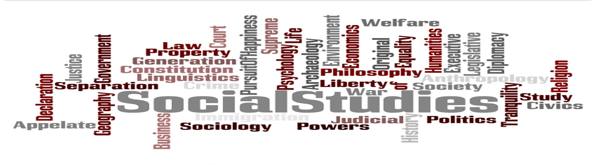

...

...

...
Tons of awesome courses in one awesome channel. Check out the playlists for past courses in Economics, U.S. Government and Politics, World History, Biology, Literature, Ecology, Chemistry, Psychology, and US History.
The core curriculum focuses on math, science, social studies and language arts with the goal of academic excellence and personal character development. This curriculum is enhanced by instruction in art, drama, band, orchestra, chorus, and more.
Khan Academy allows you to learn almost anything for free. There are over 10,000 videos and explanations at your fingertips in math, science, economics, history, and much, much more. Also, you can bookmark your favorite content to “Your List” for easy access.
nteractive timeline, essays, videos and a reference area with speeches, music, maps, and images. Play games or watch a movie.
This site is designed as a resource for teachers and students to find content specific science games for elementary school. Interactive activities provide scaffolding to help students learn about maps, countries, history, elections and Wars.
Smithsonian offers great resources on Art and culture, history and travel, science. From interactive Idealabs to homework help and many more.